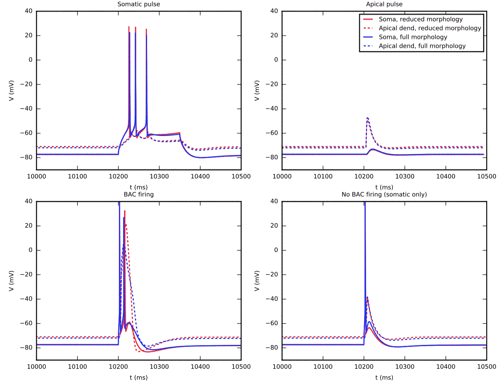

Files included in the NEURON implementation:
CaDynamics_E2.mod: Ca2+ dynamics mod file
Ca_HVA.mod #High-voltage activated Ca2+ current mod file
Ca_LVAst.mod #Low-voltage activated Ca2+ current mod file
Ih.mod #HCN channel current mod file
Im.mod #Muscarinic K+ current mod file
K_Pst.mod #Persistent K+ current mod file
K_Tst.mod #Transient K+ current mod file
NaTa_t.mod #Transient Na+ current mod file
Nap_Et2.mod #Persistent Na+ current mod file
SK_E2.mod #SK current mod file
SKv3_1.mod #Kv3.1 channel (K+) current mod file
epsp.mod #EPSC-like synaptic current mod file
fullhay_run_1.dat #Reference simulation results of the full model
# using a somatic stimulus
fullhay_run_2.dat #Reference simulation results of the full model
# using a synaptic stimulus
fullhay_run_3.dat #Reference simulation results of the full model
# using a somatic+synaptic stimulus
fullhay_run_3a.dat #Reference simulation results of the full model
# using a somatic stimulus
models/fourcompartment.hoc #The model template
runmodel.hoc #The hoc file for running the simulations 1, 2, 3 and 3a
# (this creates run_1.dat, run_2.dat, run_3.dat data files
# that you plot later)
runmodel.py #The python file for running the simulations 1, 2, 3 and
# 3a and plotting the results
Mod and hoc-files are based on the ModelDB entry 139653
(http://modeldb.yale.edu/139653).
Run the NEURON implementation and plot the results (runs.eps) by
running commands:
nrnivmodl
python runmodel.py
This script reproduces data showed in (Mäki-Marttunen et al.: "Step-wise model fitting
accounting for high-resolution spatial measurements:
construction of a layer V pyramidal cell model with
reduced morphology", BMC Neuroscience 2016,
17(Suppl 1), p. 165):

Alternatively, run without python and save the results to files run_1.dat, run_2.dat, run_3.dat and run_3a.dat:
nrnivmodl
nrniv runmodel.hoc